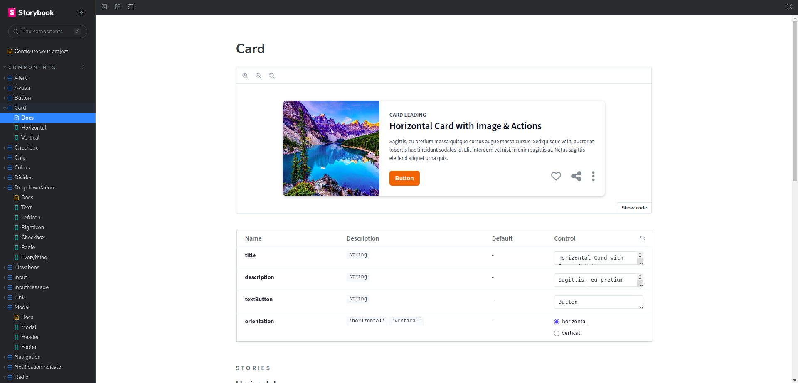

Simranpreet Singh

Software Engineer
Technical Skills: HTML5, CSS3, SCSS, JavaScript, TypeScript, ContextAPI, RESTful APIs, Eslint, Webpack, Git.
UI Frameworks/Libraries: Next.js, React.js, Node.js, Express, Redux, Material-UI, Bootstrap, styled-components, Storybook.
Testing Framework/Library/Database: React Testing Library, Jest, MongoDB.
Education
-
MCA Guru Nanak Dev Engineering College (Sep 2022 - Jun 2024) -
BCA Guru Nanak Inst. of Mgmt. & Tech. (Aug 2019 - May 2022)
Work Experience
Frontend Intern at Ryazio Technologies LLP (Feb 2024 - Present)
Technologies used: Next.js, React.js, Redux.js, ContextAPI, JavaScript, TypeScript, Storybook
- Leveraged technical expertise in the MERN stack, collaborating with team members to build and enhance complex e-commerce platforms, contributing to both frontend and backend development.
- Developed and maintained backend logic, ensuring smooth integration with the frontend, while also designing and implementing various application pages for a seamless user experience.
- Utilized Storybook to create and document reusable design patterns, enhancing UI components, ensuring project consistency, and elevating overall design quality.
Frontend Intern at Dez Web Solutions Pvt Ltd (Aug 2022 - Dec 2022)
Technologies used: React.js, Redux.js, JavaScript, TypeScript, ClerkAPI, GetStreamAPI
- Toucan App: Implemented user authentication by integrating the Clerk API and developed a feature-rich chatbox using getstream.io for real-time communication.
- Chrishan Solutions: Implemented dynamic, responsive web pages by integrating HTML5, SASS, Bootstrap, and JavaScript, enhancing both functionality and design scalability.
- Playerange App: Integrated real-time chatbox functionality utilizing the PubNub API to enable seamless, low-latency communication within the application.
- Cancan App: Elevated the e-commerce user interface by utilizing React.js to create a more interactive and user-friendly experience.
Projects
DesignPattern | React, Storybook, styled-components
- Created a comprehensive component library utilizing Storybook and React, providing detailed documentation for UI components.
- Implemented interactive stories to demonstrate component behavior.

VideoShare | React, JavaScript, ContextAPI, WebRTC, Socket.io, Express
- The application facilitates the generation and distribution of unique video call links, offering seamless connections and intuitive control over audio and video settings.
- It includes advanced functionalities such as screen sharing and real-time messaging, enhancing the communication experience for both personal and professional applications.
NewsDaily | React, Redux, JavaScript, react-router, styled-components, react-bootstrap
- Integrated the GNews public API to fetch and display the latest global articles and categories, including images, titles, descriptions, and links to original sources.
- Implemented advanced features like search functionality and article previews, ensuring the application is fully responsive and provides an optimal user experience.
CurrencyConverter | React, TypeScript, Bootstrap, currency-flags, Axios
- Developed the application using React and TypeScript, featuring a highly interactive and intuitive UI for smooth currency selection and amount input. Ensured full responsiveness and user-friendliness for an optimal experience across various devices.
- Integrated a real-time exchange rate API, enabling the app to dynamically fetch and display current currency conversion data.
Achievements
- Member of GreatDevelopers: Great Developers is a Google group initiated by Dr. Hardeep Singh Rai from our college, where we tackle real-world problems in the tech industry. We collaborate as a team to solve various challenges, support fellow developers, and welcome newcomers to the community.
- Hacktoberfest: Participated in Hacktoberfest from 2021 to 2023, contributing to open-source projects by submitting pull requests, enhancing software tools, fixing bugs, and adding new features, thereby gaining experience in collaborative development and version control.
- Wartech competition: Developed a mobile shopping application, earning first place in web development at the competition hosted by GNIMT College.
- Disha competition: Developed a portfolio application and secured third place in a competition at Arya College, competing against participants from across Punjab.
- Head of the college's web development and IT club: Led the college's web development and IT club, where I instructed students in HTML5, CSS3, Bootstrap, JavaScript, and Git.